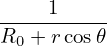

z. Using Cartesian coordinate basis vectors, dl is written
as
z. Using Cartesian coordinate basis vectors, dl is written
as
For a curve in the poloidal plane, the line element dl in terms of the cylindrical basis is
written as dl = dRR(ϕ) + dZz. Using Cartesian coordinate basis vectors, dl is written
as
 | (632) |
Using Eq. (632) and (626), we obtain
 | (633) |